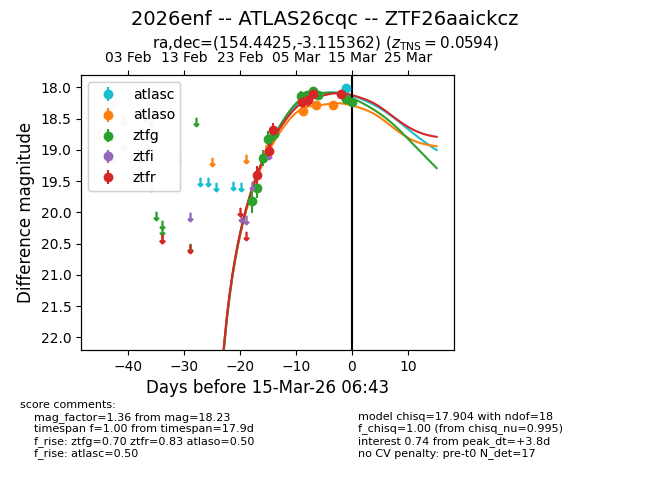
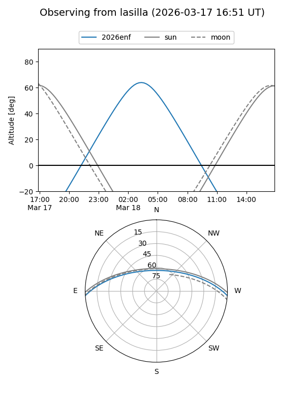
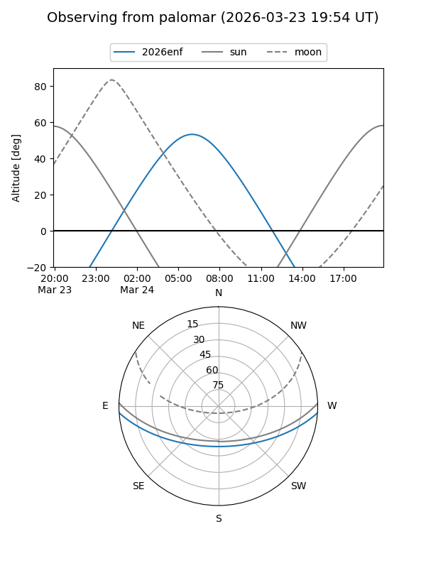
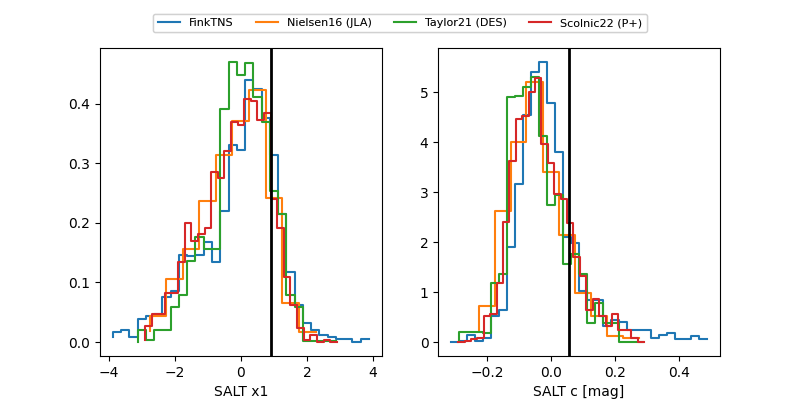

2026enf
Target 2026enf at 2026-03-15 06:45
Aliases and brokers:
FINK: link
Lasair: link
ALeRCE: link
TNS: link
YSE: link
alt names
ZTF26aaickcz (ztf,fink_ztf)
2026enf (tns,yse)
ATLAS26cqc (atlas)
Coordinates:
equatorial (ra, dec) = 154.4425,-3.11536
equatorial (HMS+DMS) = 10:17:46.20,-03:06:55.30
galactic (l, b) = (246.0729,+42.18311)
Flags:
confirmed ia
Photometry:
last atlasc=18.00, atlaso=18.29, ztfg=18.23, ztfr=18.11
1 atlasc, 3 atlaso, 11 ztfg, 7 ztfr detections
Lightcurve

Visibility


Additional plots
